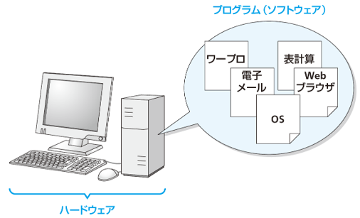
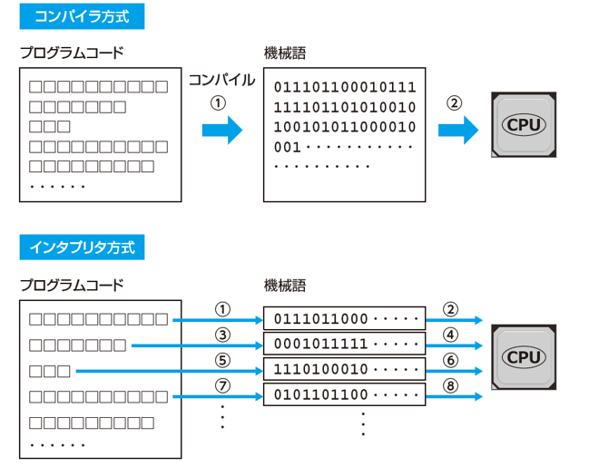
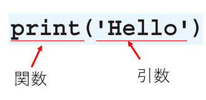
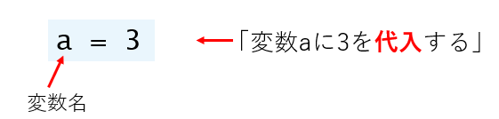
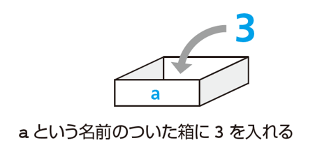
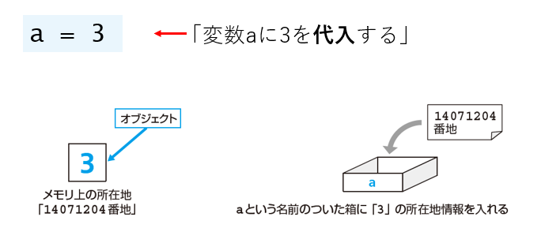

2. 第1章 Pythonに触れる¶
プログラムとは¶
コンピュータに命令を与えるものが 「プログラム」
プログラムを作成するための専用言語が「プログラミング言語」
その中の1つに「Python」がある

さまざまなプログラミング言語¶
C: 歴史のある言語、組み込みプログラム
C++: C言語の後継、オブジェクト指向
C#: C++言語の後継、米マイクソロソフト
Perl: スクリプト言語、手軽な開発
PHP: サーバサイド、Webページ生成
Java: オブジェクト指向、大規模システム
JavaScript: ブラウザで動作、動的なWebページ
Python: 修得が容易、機械学習分野で普及
プログラムコードが実行されるまで¶

Pythonはインタプリタ方式
Pythonのプログラムコード¶
total = 0
for i in range(1, 101):
total += i
print(total)
↑ 1から100までの整数を順番に足しあげて、その結果を画面に表示するプログラムのプログラムコード
半角英数と記号で記述する
人が読んで理解できるテキスト形式
Pythonに触れてみる¶
電卓のように¶
加算
12 + 34
掛け算
15 * 10
割り算
90 / 2
括弧を使った計算
10 * (7 - 2) + 5
文字列を扱う¶
print('Hello, Python')
Hello, Python
print('出力する内容')として、文字列を出力できる。 文字列の前後をシングルクォーテーション（'）、または、ダブルクォーテーション（"）で囲む
print関数¶

print 関数は、引数で与えられたものを標準出力に出力する働きをする組み込み関数
※ print 関数のように、はじめから使える関数を組み込み関数という（自分で作った関数はユーザ定義関数）
※ 標準出力はプログラム実行環境によって異なる
プログラムコードのルール¶
半角英数字と半角記号を使用して記述する（クオーテーションで囲んだ文字列は例外）
大文字と小文字は区別される
○ print('Hello')
× Print('Hello')単語や数字、記号の前後には、半角の空白文字を入れても入れなくてもよい
○ 3+4
○ 3 + 4
エラー¶
例1
Print('Hello')
Traceback (most recent call last):
File "<stdin>", line 1, in <module>
NameError: name 'Print' is not defined. Did you mean: 'print'?
例2
print('Hello)
File "<stdin>", line 1
print('Hello)
^
SyntaxError: unterminated string literal (detected at line 1)
プログラムコードを適切に実行できない場合にエラーが発生し、エラーメッセージが表示される。
※ エラーメッセージには、発生したエラーに関する説明が表示されるので、がんばって読むようにする。
変数¶
変数¶
「変数」とは、値を入れておく入れ物

代入」の一般的なイメージ

代入の正確なイメージ¶

「3という値を表すオブジェクトがコンピュータのメモリ上のどこかに保管される。その保管場所を示す所在地情報が、aという名前の箱に入れられる」
代入した値を確認する¶
print 関数で、変数に代入されている値を出力できる。 ※ 変数の値を見ることを「参照する」という
a = 3 <--- 変数aに3を代入する
print(a) <--- 変数aに代入されている値を出力する
3
複数の変数の値をいっぺんに出力できる
a = 10
b = 123
print(a, b) <--- print関数に2つの変数をカンマ(,)区切りで渡す
10 123 <--- それぞれの変数の値が出力される
Google Colabではprint 関数を省略できる
a = 3
a <--- print()を使わずに、変数名だけを記述します
3 <--- 変数の値が出力される
3つのキーワード¶
変数
代入
参照
値を変更する¶
変数に、あとから別の値を代入できる
変数aに3を代入
a = 3
print(a)
3
変数aに5を代入
a = 5
print(a)
5
変数aに文字列helloを代入
a = 'hello'
print(a)
hello
練習問題
問題 1¶
次の文章のうち正しいものには○を、正しくないものには×をつけてください。
（1） コンピュータは、Pythonのプログラムコードを直接理解して処理を行う。
（2） Pythonのプログラムコードは、大文字と小文字の違いを区別しない。
（3） Pythonには、1行ずつプログラムコードを入力して、そのつど実行する方法がある。
（4） 「print(こんにちは)」と記述すると、「こんにちは」という文字列が出力される。
（5） 変数には後から異なる値を代入できる。
問題 1（解答）¶
次の文章のうち正しいものには○を、正しくないものには×をつけてください。
×（1） コンピュータは、Pythonのプログラムコードを直接理解して処理を行う。
×（2） Pythonのプログラムコードは、大文字と小文字の違いを区別しない。
〇（3） Pythonには、1行ずつプログラムコードを入力して、そのつど実行する方法がある。
×（4） 「print(こんにちは)」と記述すると、「こんにちは」という文字列が出力される。
〇（5） 変数には後から異なる値を代入できる
問題 2¶
次の文章の空欄に入れるべき語句を、選択肢から選んでください。
コンピュータが値を記憶しておくための入れ物のことを[（1）]という。 [（1）] に値を格納することを[（2）]という。 [（2）] を行うには、記号[（3）]を使用する。 [（1）]に[（2）]された値は print 関数を用いてコンソールに[（4）] できる。
【選択肢】 ・代入 ・変数 ・オブジェクト ・出力 ・>>> ・=
問題 2（解答）¶
次の文章の空欄に入れるべき語句を、選択肢から選んでください。
コンピュータが値を記憶しておくための入れ物のことを[変数]という。 [変数] に値を格納することを[代入]という。 [代入] を行うには、記号[=]を使用する。 [変数]に[代入]された値は print 関数を用いてコンソールに[出力] できる。
【選択肢】 ・代入 ・変数 ・オブジェクト ・出力 ・>>> ・=
問題 3¶
対話モードで、次の計算を実行して結果を確認しましょう。
（1） 1 + 2 + 3 + 4 （2） 2 + 3 * 2 （3） (2 + 3) * 2 （4） 10 / 2.5 （5） 3 / 0
問題 3（解答）¶
（1） 1 + 2 + 3 + 4
10
（2） 2 + 3 * 2
8
（3） (2 + 3) * 2
10
（4） 10 / 2.5
4.0
（5） 3 / 0
Traceback (most recent call last):
File "<stdin>", line 1, in <module>
ZeroDivisionError: division by zero
問題 4¶
次のようにして、変数aに10という値を代入し、print関数で値を出力できます。
a = 10
print(a)
10
（1） 変数bに5という値を代入してから、print関数で変数bに代入された値を出力してください。
（2） 変数cに「Python」という文字列を代入してから、print関数で変数cに代入された値を出力してください。
問題 4（解答）¶
次のようにして、インタラクティブシェルで変数aに10という値を代入し、print関数で値を出力できます。
a = 10
print(a)
10
（1） 変数bに5という値を代入してから、print関数で変数bに代入された値を出力してください。
b = 5
print(b)
10
（2） 変数cに「Python」という文字列を代入してから、print関数で変数cに代入された値を出力してください。
c = 'Python'
print(c)
Python